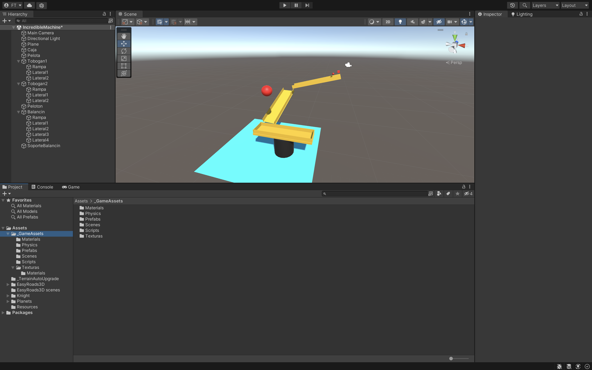

Haremos un circuito con toboganes, balancin que tendrán cubos y esferas para que se deslicen.
Para ello necesitaremos una estructura de carpetas que tendrán el
contenido necesario para hacer el juego que lo iremos incluyendo poco a poco:
_GameAssets
• Materials.
o Todos los Objetos tienen que tener un material de color.
• Physics.
o Ball.
o Caja.
o Rampa.
o RampaLenta. Con Friction para el Tobogan2 y la Rampa del balancin.
• Scenes.
o IncredibleMachine.
Tendremos que crear dentro de esta escena:
• Plano.
• Caja (Cubo). Que se deslizara por el tobogán
• Pelota (Esfera). Que se deslizara por el tobogán.
• Tobogan1.
o Rampa.
o Lateral Rampa1.
o Lateral Rampa2.
• Tobogan2.
o Rampa.
o Lateral Rampa1.
o Lateral Rampa2.
• Peloton. Esfera con más peso
• Balancin.
o Rampa.
o Lateral Rampa1.
o Lateral Rampa2.
o Lateral Rampa3.
o Lateral Rampa4.
• Soporte Balancin (Cilindro).

Cambiaremos las masas y jugaremos con los materiales físicos para ver su comportamiento.
Pondremos un balancin y haremos que una pelota caiga a una altura con la gravedad.